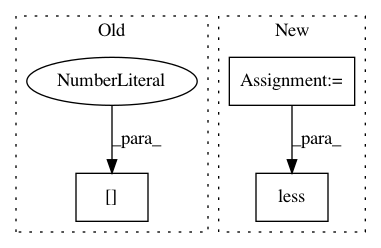

397f52d1e457b421b99ae352d0284ada00b321d8,stellargraph/layer/sort_pooling.py,SortPooling,call,#SortPooling#Any#,68
Before Change
// Truncate or pad to size self.k
if outputs.shape[1] < self.k:
outputs = tf.pad(outputs, [[0, 0], [0, self.k - outputs.shape[1]], [0, 0]])
elif outputs.shape[1] > self.k:
outputs = outputs[:, : self.k, :]
After Change
inputs,
)
outputs_shape = tf.shape(outputs)
outputs = tf.cond(
tf.math.less(outputs_shape, self.k)[1],
true_fn=lambda: tf.pad(
outputs, [[0, 0], [0, (self.k - outputs_shape)[1]], [0, 0]]
),
In pattern: SUPERPATTERN
Frequency: 3
Non-data size: 3
Instances
Project Name: stellargraph/stellargraph
Commit Name: 397f52d1e457b421b99ae352d0284ada00b321d8
Time: 2020-04-02
Author: pantelis.elinas@data61.csiro.au
File Name: stellargraph/layer/sort_pooling.py
Class Name: SortPooling
Method Name: call
Project Name: geomstats/geomstats
Commit Name: 39caa436b0249d79ebec385a08b891f0c3e4edbb
Time: 2018-02-11
Author: ninamio78@gmail.com
File Name: geomstats/hyperbolic_space.py
Class Name: HyperbolicSpace
Method Name: belongs
Project Name: geomstats/geomstats
Commit Name: 953cd54eff33bf1a77870044e4c9bfdf320e889d
Time: 2018-02-11
Author: ninamio78@gmail.com
File Name: geomstats/hypersphere.py
Class Name: Hypersphere
Method Name: belongs